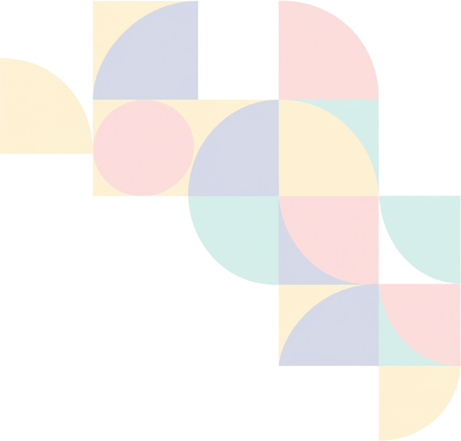

✳ SAÚDE NA ESCOLA, COM VOCÊ
Deu match
Deu match
com a saúde!
O Zé Gotinha chegou no zap! Tire suas dúvidas, descubra curiosidades e aprenda brincando.
💉 Vacinação
💚 SUS
🎲 Quiz
UMA CONVERSA PODE TRANSFORMAR O MUNDO ♥
Zé Gotinha ✦Assistente virtual educativo • demonstração
✳
Uma conversa, muitas descobertas!Pergunte sobre saúde e protagonismo juvenil 💙
MOSTRA 2026HOJE
Não compartilhe nome completo, telefone, endereço ou informações médicas pessoais.
Modo demonstração: respostas ilustrativas. A IA real é ativada quando o servidor estiver configurado.
ESCOLHA O JEITO DE CONVERSAR
Zé Gotinha virtual com IA • Não é canal oficial de atendimento • Não substitui profissionais de saúde
Como cuidamos da sua privacidade